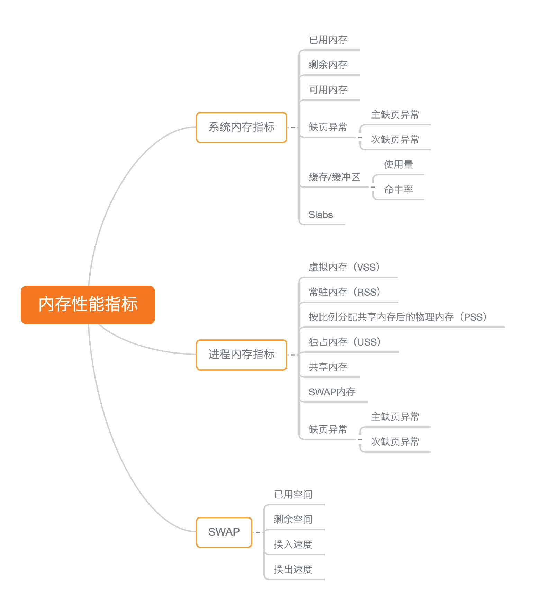
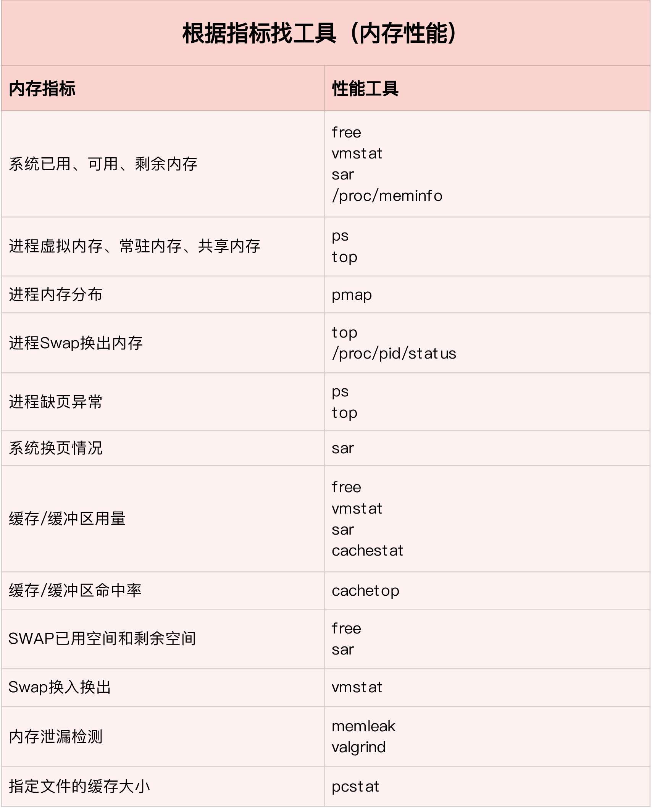
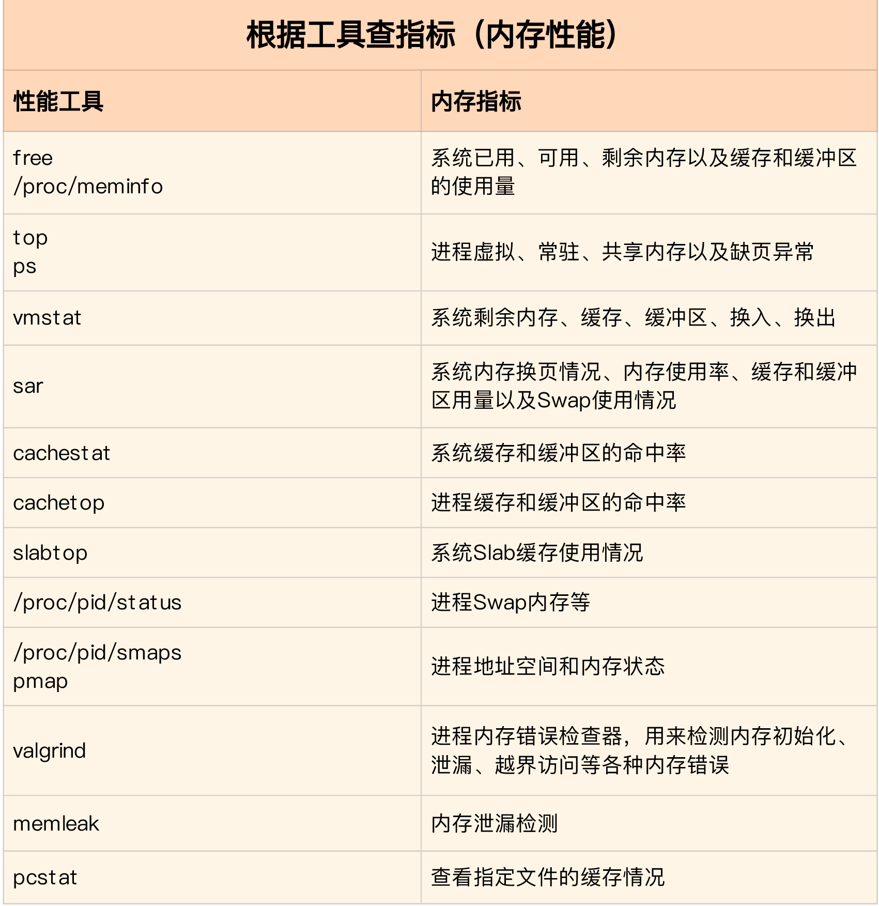
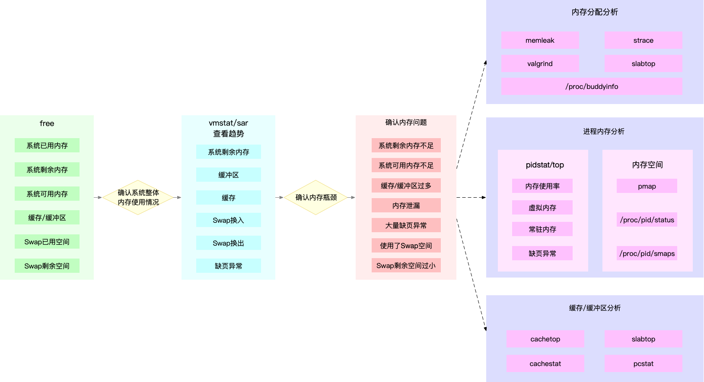

内存性能指标
系统内存使用情况：已用内存、剩余内存、共享内存、可用内存、缓存和缓冲区的用量
- 已用内存和剩余内存很容易理解，就是已经使用和还未使用的内存。
- 共享内存是通过 tmpfs 实现的，所以它的大小也就是 tmpfs 使用的内存大小。tmpfs 其实也是一种特殊的缓存。
- 可用内存是新进程可以使用的最大内存，它包括剩余内存和可回收缓存。
- 缓存包括两部分，一部分是磁盘读取文件的页缓存，用来缓存从磁盘读取的数据，可以加快以后再次访问的速度。
- 另一部分，则是 Slab 分配器中的可回收内存。缓冲区是对原始磁盘块的临时存储，用来缓存将要写入磁盘的数据。这样，内核就可以把分散的写集中起来，统一优化磁盘写入。
进程内存使用情况：进程的虚拟内存、常驻内存、共享内存以及 Swap 内存
- 虚拟内存，包括了进程代码段、数据段、共享内存、已经申请的堆内存和已经换出的内存等。这里要注意，已经申请的内存，即使还没有分配物理内存，也算作虚拟内存。
- 常驻内存是进程实际使用的物理内存，不过，它不包括 Swap 和共享内存。
- 常驻内存一般会换算成占系统总内存的百分比，也就是进程的内存使用率。
- 共享内存，既包括与其他进程共同使用的真实的共享内存，还包括了加载的动态链接库以及程序的代码段等。
- Swap 内存，是指通过 Swap 换出到磁盘的内存。
缺页异常：
- 可以直接从物理内存中分配时，被称为次缺页异常。
- 需要磁盘 I/O 介入（比如 Swap）时，被称为主缺页异常。
Swap 的使用情况：Swap 的已用空间、剩余空间、换入速度和换出速度
- 已用空间和剩余空间很好理解，就是字面上的意思，已经使用和没有使用的内存空间。
- 换入和换出速度，则表示每秒钟换入和换出内存的大小。

内存性能工具
通过 proc 文件系统，找到了内存指标的来源；并通过 vmstat，动态观察了内存的变化情况。与 free 相比，vmstat 除了可以动态查看内存变化，还可以区分缓存和缓冲区、Swap 换入和换出的内存大小。
性能指标和工具的联系
- 从内存指标出发，更容易把工具和内存的工作原理关联起来。
- 从性能工具出发，可以更快地利用工具，找出我们想观察的性能指标。特别是在工具有限的情况下，我们更得充分利用手头的每一个工具，挖掘出更多的问题。


如何迅速分析内存的性能瓶颈
为了迅速定位内存问题，我通常会先运行几个覆盖面比较大的性能工具，比如 free、top、vmstat、pidstat 等。
具体的分析思路主要有这几步。
- 先用 free 和 top，查看系统整体的内存使用情况。
- 再用 vmstat 和 pidstat，查看一段时间的趋势，从而判断出内存问题的类型。
- 最后进行详细分析，比如内存分配分析、缓存 / 缓冲区分析、具体进程的内存使用分析等。
